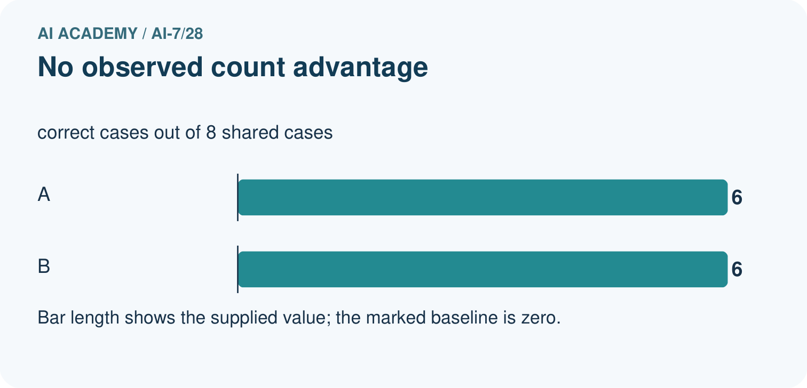
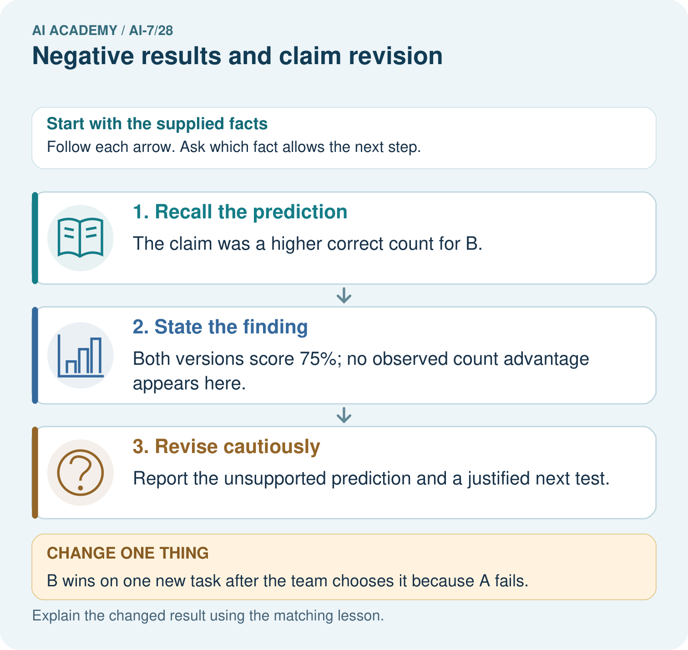
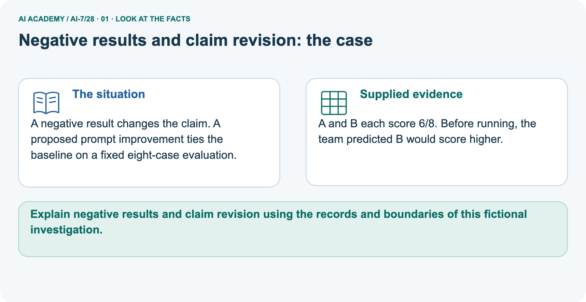
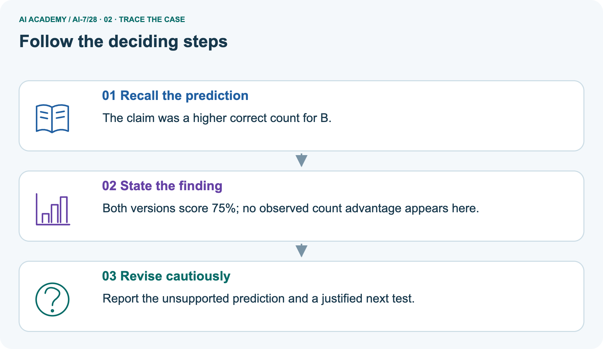
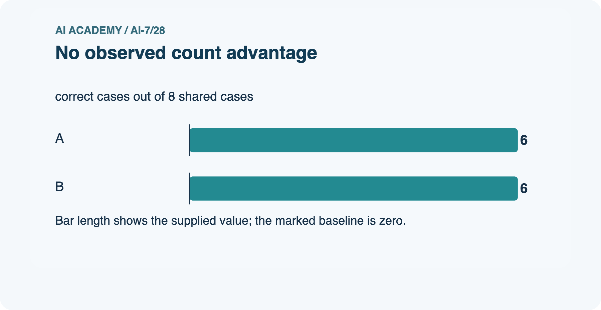
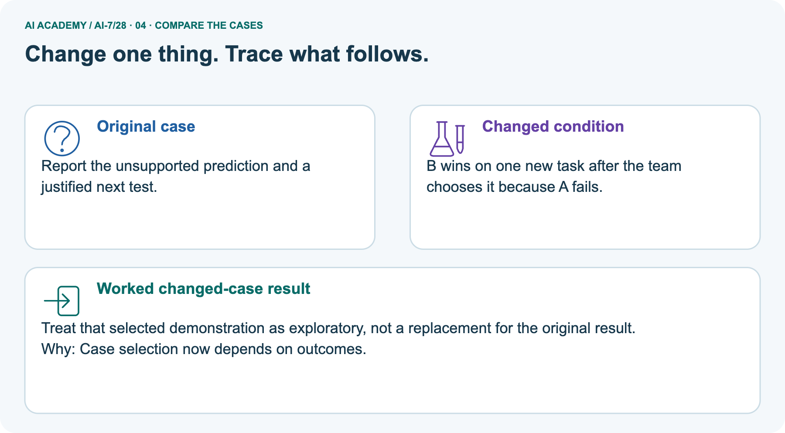
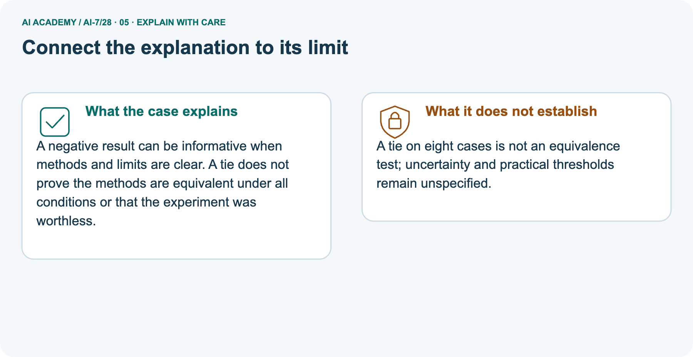
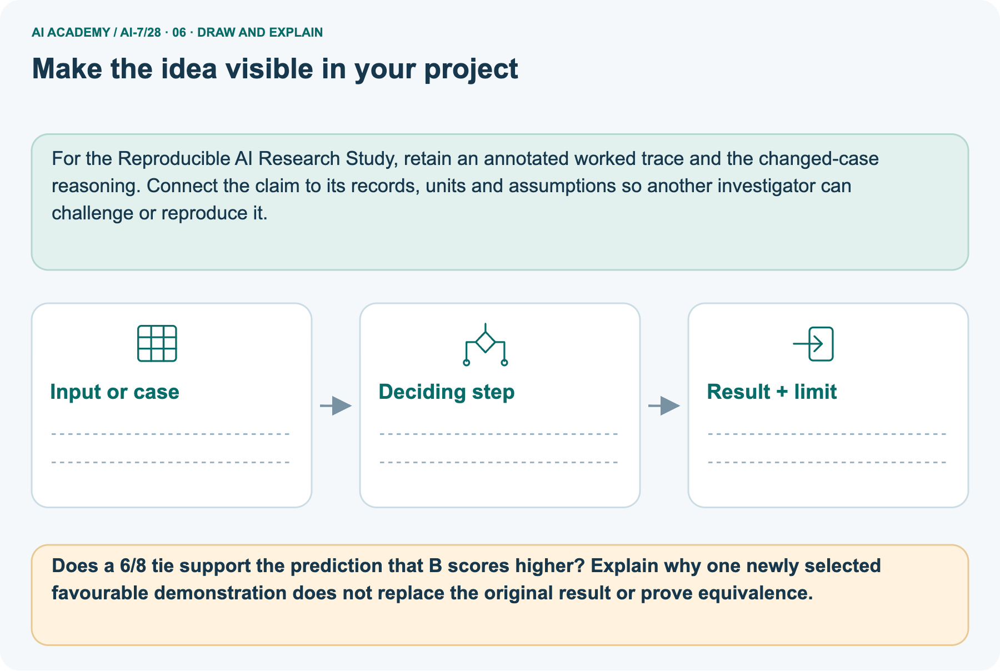

AI Academy · Level 7 · Grade 12 · Week 28 · Workbook
Negative results and claim revision
Learn to understand, design, build, test and explain AI systems responsibly.
Project: Reproducible AI Research Study
THE CONNECTED WEEK
One complete research-case evidence record.
Preserve negative results without turning a tie into equivalence or selected demonstrations into confirmation.
Keep one habit: Recall → W1–W3/W5 → independent case → project evidence → feedback and delayed return.
Main lesson · Section 1
Recall · Retrieve before notes
Keep this task’s inputs,rule and response together.
Complete task and evidence
Try the recall before opening notes. Then use a different colour or a labelled second line to correct your explanation.
Without opening the old lesson, explain one key idea from Robustness across conditions. Give an example and a mistake that the idea helps you avoid.
Without opening the old lesson, explain one key idea from Running the primary experiment. Give an example and a mistake that the idea helps you avoid.
Without opening the old lesson, explain one key idea from Pilot experiments. Give an example and a mistake that the idea helps you avoid.
Robustness across conditions
Running the primary experiment
Pilot experiments
Main lesson · Section 5
W1 · Explain the current example
Keep this task’s inputs,rule and response together.
Complete task and evidence
Negative results state that evidence did not meet a declared expectation, with the original method and limitations retained. Main prediction expects B support strictly above A; both pass 8/10 = 80%, so observed strict improvement is absent. This does not prove equal population performance or universal uselessness. Separate picture predicts higher B correctness but both score 6/8 = 75%.
Zero observed count difference is not an equivalence test, and individual correct/error identities are unknown. A new task chosen because A fails, on which B wins, is a selected demonstration; preserve it separately and disclose outcome-driven selection. Proposed explanations and revised questions are new work, not established mechanisms. No uncertainty method or equivalence margin is supplied.
Report an unmet practical target together with any positive observed magnitude rather than hiding either. The investigation is a fictional paper claim audit, not a real model trial.
Explain the weekly mechanism in your own words. Use the worked scenario to name its input, decision rule and output.
Main lesson · Section 6
W2 · Trace the worked case
Keep the supplied inputs, comparison rule and evidence together.
Complete task and evidence
Negative results state that evidence did not meet a declared expectation, with the original method and limitations retained. Main prediction expects B support strictly above A; both pass 8/10 = 80%, so observed strict improvement is absent. This does not prove equal population performance or universal uselessness. Separate picture predicts higher B correctness but both score 6/8 = 75%.
Zero observed count difference is not an equivalence test, and individual correct/error identities are unknown. A new task chosen because A fails, on which B wins, is a selected demonstration; preserve it separately and disclose outcome-driven selection. Proposed explanations and revised questions are new work, not established mechanisms. No uncertainty method or equivalence margin is supplied.
Report an unmet practical target together with any positive observed magnitude rather than hiding either. The investigation is a fictional paper claim audit, not a real model trial.
Hypothesis expects B support strictly above A. Both pass 8/10 reserved cases. Show the intermediate steps and give the conclusion with its scope.
| Main claim step | Complete result | Supported wording |
|---|---|---|
| A observed support passes | 8/10 = 80% | Report supplied count and denominator |
| B observed support passes | 8/10 = 80% | Same observed count |
| Observed difference | 80% − 80% = 0 percentage points | Strict improvement not observed |
| Original expectation | B strictly above A | Expectation unmet on these cases |
| Population equality | Not tested or established | Do not say both methods are universally identical |
| Next question | Can be proposed with a new design | Preserve original result and identify new exploratory work |
Main lesson · Section 7
W3 · Repair a misconception
Keep this task’s inputs,rule and response together.
Complete task and evidence
Negative results state that evidence did not meet a declared expectation, with the original method and limitations retained. Main prediction expects B support strictly above A; both pass 8/10 = 80%, so observed strict improvement is absent. This does not prove equal population performance or universal uselessness. Separate picture predicts higher B correctness but both score 6/8 = 75%.
Zero observed count difference is not an equivalence test, and individual correct/error identities are unknown. A new task chosen because A fails, on which B wins, is a selected demonstration; preserve it separately and disclose outcome-driven selection. Proposed explanations and revised questions are new work, not established mechanisms. No uncertainty method or equivalence margin is supplied.
Report an unmet practical target together with any positive observed magnitude rather than hiding either. The investigation is a fictional paper claim audit, not a real model trial.
A report omits this qualification: Failure to meet a criterion or reject a null is not proof of exact equivalence. Explain how omitting it could change a reader's interpretation, and write an accurate replacement.
Main lesson · Section 9
W5 · Explain the limitation
Keep this task’s inputs,rule and response together.
Complete task and evidence
Negative results state that evidence did not meet a declared expectation, with the original method and limitations retained. Main prediction expects B support strictly above A; both pass 8/10 = 80%, so observed strict improvement is absent. This does not prove equal population performance or universal uselessness. Separate picture predicts higher B correctness but both score 6/8 = 75%.
Zero observed count difference is not an equivalence test, and individual correct/error identities are unknown. A new task chosen because A fails, on which B wins, is a selected demonstration; preserve it separately and disclose outcome-driven selection. Proposed explanations and revised questions are new work, not established mechanisms. No uncertainty method or equivalence margin is supplied.
Report an unmet practical target together with any positive observed magnitude rather than hiding either. The investigation is a fictional paper claim audit, not a real model trial.
For the worked scenario, propose one additional case that could reveal a failure, describe its expected outcome before running it, and explain what would need to remain fixed for a fair comparison.
Do not reuse W4 as a new final test after receiving feedback.
Main lesson · Section 4
Try alone · Selected transfer
Keep this task’s inputs,rule and response together.
Complete task and evidence
Hypothesis predicts mean latency reduction at least 2 seconds. Observed paired mean reduction .8. Report.
Attempt this case before feedback. Record any help. Earlier examples below are further practice; a case already practised with feedback cannot establish fresh transfer.
Independent case: Apply a new case independently
Main lesson · Section 10
Project · Keep the research evidence
Preserve the question, protocol, observations, analysis and limits.
Complete task and evidence
Add a labelled negative results and claim revision evidence sheet to Reproducible AI Research Study. Show how you can explain the mechanism and terminology of negative results and claim revision.
Use the supplied fictional case and keep its inputs, intermediate steps, calculation or prediction, and limitation. Connect this record to last week’s record; a matching answer without a trace is insufficient.
Main lesson · Section 11
Feedback · Repair and return
Keep this task’s inputs,rule and response together.
Complete task and evidence
Revisit this idea with your teacher after a delay. Familiarity is different from explaining and using it on a changed case.
| Evidence | My record |
|---|---|
| Worked alone / hint / model | |
| First step I repaired and why | |
| New case checked later; date and result | |
| What I can now explain without notes | |
| One remaining question |
Reference bank and extra practice
Choose the reference that helps your next step.
Reference · Supported W2 record
Reference · Section 2
Reference · Supported W2 record
Keep this task’s inputs,rule and response together.
Complete task and evidence
Use W2: Trace the worked case for Negative results and claim revision. Record the answer once; the lesson and workbook refer to the same attempt.
| Given inputs | Procedure I chose | Middle steps | Result and check |
|---|---|---|---|
Extra practice · Individual reasoning check
Reference · Section 3
Extra practice · Individual reasoning check
Keep this task’s inputs,rule and response together.
Complete task and evidence
Use the worked case for Negative results and claim revision. Proposed explanation: “The worked result establishes every future case”. Decide whether this explanation is supported.
Point to the step or supplied fact that decides; explain your repair if needed.
Reference · Earlier W4 response copy
Reference · Section 8
Reference · Earlier W4 response copy
Keep this task’s inputs,rule and response together.
Complete task and evidence
Hypothesis predicts mean latency reduction at least 2 seconds. Observed paired mean reduction .8. Report.
Extra practice · Pictured case
Reference · Section 12
Extra practice · Pictured case
Keep this task’s inputs,rule and response together.
Complete task and evidence
A negative result changes the claim. A proposed prompt improvement ties the baseline on a fixed eight-case evaluation.
A and B each score 6/8. Before running, the team predicted B would score higher.
Does a 6/8 tie support the prediction that B scores higher? Explain why one newly selected favourable demonstration does not replace the original result or prove equivalence.
Support used: alone / hint / worked example. This record is practice evidence.
Project connection: For the Reproducible AI Research Study, retain an annotated worked trace and the changed-case reasoning.
Connect the claim to its records, units and assumptions so another investigator can challenge or reproduce it.







Reference · Project milestone
Reference · Section 13
Reference · Project milestone
Keep this task’s inputs,rule and response together.
Complete task and evidence
Project: Reproducible AI Research Study
Current milestone: Prepare the demonstration. Gather reproducible instructions, evidence, access checks and remaining limitations.
For the Reproducible AI Research Study, retain an annotated worked trace and the changed-case reasoning. Connect the claim to its records, units and assumptions so another investigator can challenge or reproduce it.
| Evidence to keep | My record |
|---|---|
| This week’s input and deciding step | |
| Prediction and actual result (or labelled paper trace) | |
| One change since the previous checkpoint and why | |
| One error or limit and the next test |
Extra practice · Predict,check and repair
Reference · Section 14
Extra practice · Predict,check and repair
Keep supported feedback separate from the independent case.
First supported question and optional hint
A negative result changes the claim. A proposed prompt improvement ties the baseline on a fixed eight-case evaluation.
Which labelled step matches this detail? Report the unsupported prediction and a justified next test.
1. Revise cautiously
2. Recall the prediction
3. State the finding
Hint if needed: Read the steps in the pictorial case. Match the supplied detail to the stage that performs or records it.
Practice 1: explain the deciding evidence
Check after the first attempt
After your attempt, compare with the supported explanation: Revise cautiously Report the unsupported prediction and a justified next test. A negative result can be informative when methods and limits are clear.
A tie does not prove the methods are equivalent under all conditions or that the experiment was worthless.
Changed-case question and optional hint
Changed-case practice: B wins on one new task after the team chooses it because A fails. Which conclusion is supported by the supplied facts?
1. We can decide the result without examining the changed input or the procedure.
2. This one example guarantees correct results for every future input.
3. Treat that selected demonstration as exploratory, not a replacement for the original result.
Hint if needed: Use the changed condition and the deciding step in the pictorial trace. The answer must say what follows from those facts.
Practice 2: explain the deciding evidence
Check after the changed attempt
After your attempt, compare with the supported explanation: Treat that selected demonstration as exploratory, not a replacement for the original result. Case selection now depends on outcomes.
Repair and retain the record
Review Robustness across conditions (ai-7/27). Goal: Explain the mechanism and terminology of robustness across conditions. Short practice: Calculate indoor, outdoor and combined rates.
Which relevant weakness disappears from view when only the combined rate is reported?. Return to this week and explain what you changed.
Review Running the primary experiment (ai-7/25). Goal: Explain the mechanism and terminology of running the primary experiment. Short practice: Compute A’s and B’s six-case counts and identify the cases that favour each.
How must a B revision tuned on case four be labelled when evaluated again on the same set?. Return to this week and explain what you changed.
Review Pilot experiments (ai-7/22). Goal: Explain the mechanism and terminology of pilot experiments. Short practice: Calculate reviewer agreement on the four pilot answers.
What can the disagreement improve, and why are those revised practice answers not untouched final evidence?. Return to this week and explain what you changed.
Use Download completed work in the hosted lesson to export your answers, reflections, practice feedback and code-run evidence. Open the HTML copy to read or print it.
Drafts stay in this browser when storage is available; clear drafts on a shared device.
Earlier wording, alternatives and picture transcripts
Use this supported practice once, in the browser or on paper. Keep the reserved independent assessment for a separate first attempt before teacher feedback.
Repair a missing building block
Keep your completed work
Reference · Six-picture response sheets
Reference · Section 15
Reference · Six-picture response sheets
Choose the picture that helps explain the current step.
01. Negative results and claim revision: the case



A negative result changes the claim. A proposed prompt improvement ties the baseline on a fixed eight-case evaluation. Supplied facts: A and B each score 6/8. Before running, the team predicted B would score higher.
Point to the given fact that matters most. Explain why it matters.
02. Follow the deciding steps



Recall the prediction: The claim was a higher correct count for B. → State the finding: Both versions score 75%; no observed count advantage appears here. → Revise cautiously: Report the unsupported prediction and a justified next test.
Point to each numbered stage and explain which recorded input it uses.
03. No observed count advantage



No observed count advantage. Units: correct cases out of 8 shared cases. A: 6. B: 6.
Read the labels and values. Explain the relationship the model shows.
04. Change one thing. Trace what follows.



Original case: Report the unsupported prediction and a justified next test. Changed condition: B wins on one new task after the team chooses it because A fails.
Expected result: Treat that selected demonstration as exploratory, not a replacement for the original result. Reason: Case selection now depends on outcomes.
Predict before checking the worked changed-case result. Name what changed and what the supplied facts allow you to conclude.
05. Connect the explanation to its limit



A negative result can be informative when methods and limits are clear. A tie does not prove the methods are equivalent under all conditions or that the experiment was worthless.
Limit: A tie on eight cases is not an equivalence test; uncertainty and practical thresholds remain unspecified.
Explain the case, then point to a limit on the claim.
06. Make the idea visible in your project



For the Reproducible AI Research Study, retain an annotated worked trace and the changed-case reasoning. Connect the claim to its records, units and assumptions so another investigator can challenge or reproduce it.
Draw your input, deciding step, result and limit. Supported question: Does a 6/8 tie support the prediction that B scores higher?
Explain why one newly selected favourable demonstration does not replace the original result or prove equivalence.
Draw your project trace and justify the deciding step using evidence.